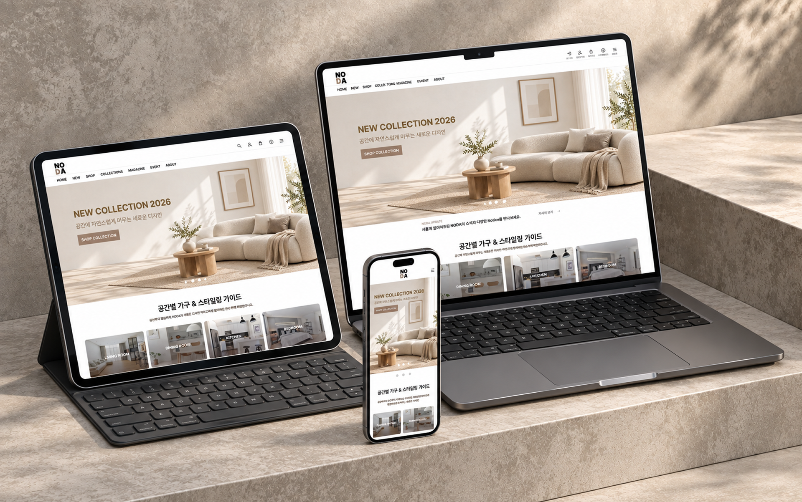
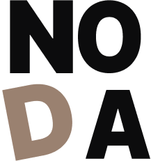

02 / PERSONAL PROJECT / FURNITURE BRAND
NODA

OVERVIEW
취향을 발견하고,
나의 공간으로 연결하기.
작은 공간에서도 나다운 취향을 담을 수 있도록 기획한 브랜드입니다. 브랜드 콘셉트부터 웹 UI/UX, 상품 구성, 반응형 퍼블리싱까지 직접 설계하고 구현했습니다.
- 작업 유형
- 개인 프로젝트
- 제작 기간
- 3주
- 담당 범위
- 브랜드 콘셉트 · UX/UI 디자인 · 반응형 퍼블리싱
- 디자인 도구
- Photoshop · Illustrator · Figma
- 퍼블리싱
- HTML · CSS · JavaScript
- 협업 / AI
- GitHub · GPT · Gemini · Claude
NODA SIGNATURE
작은 공간에 취향을 더하는
브랜드의 첫인상.
BRAND KEYWORDS
- WARM
- SIMPLE
- PERSONAL

Logo / 나만의 방식으로
브랜드명을 NO / DA로 나누어 단순하고 기억하기 쉬운 형태로 구성했습니다. 곧은 타이포그래피로 안정감을 주고, 기울어진 D에는 정해진 틀에서 벗어나 나만의 방식으로 공간을 채워간다는 의미를 담았습니다.
PERSONA / 기획 단계의 사용자 모델
작은 공간에서도,
취향을 포기하지 않는 사람.
김서연
24살 · 자취 2년차 · ESFJ
Pain Point
작은 공간에 맞는 제품을 찾기 어렵고, 쇼핑몰마다 정보 구성이 복잡해 비교하기 번거롭습니다.
Needs
- 공간 활용이 좋은 가구
- 부담 없는 가격
- 감성적인 디자인
- 쉬운 상품 탐색
Goal
자신의 취향에 맞는 가구를 빠르게 찾고, 작은 공간을 효율적으로 꾸미는 것.
DESIGN SYSTEM
따뜻한 분위기,
명확한 상품 정보.
Color
우드 소재와 자연광에서 느껴지는 따뜻하고 편안한 인상을 담은 컬러입니다. 작은 공간에서도 부담 없이 어우러지며 자연스럽고 안정적인 공간의 분위기를 표현합니다.
- MAIN#9A8170
- SUB#CBB79F
- BACKGROUND#F5F1E9
- TEXT#0C0C0D
Typography / Pretendard
따뜻하고 정돈된 브랜드 무드를 유지하면서 상품 정보가 명확하게 전달되도록 Pretendard를 사용했습니다. 상품명, 가격, 설명을 빠르게 인지할 수 있도록 Regular와 Bold의 굵기 차이로 정보 위계를 구분했습니다.
Pretendard
| 역할 | 적용 예시 | 굵기 / 크기 |
|---|---|---|
| Title | 메인 타이틀 | Bold 39px |
| Subtitle | 콘텐츠 타이틀 | Bold 25px |
| Body | 본문 텍스트 | Regular 16px |
| Caption | 보조 설명 | Regular 13px |
WEB EXPERIENCE
브랜드의 첫인상에서,
나에게 맞는 가구를 찾기까지.
공간의 분위기 발견
브랜드의 무드와 상품 구성을 만나고 탐색을 시작합니다.
취향에 맞는 상품 탐색
상품 목록에서 제품을 살펴보고 원하는 가구를 선택합니다.
제품 정보 확인
상품 상세에서 이미지와 정보를 확인하며 선택을 이어갑니다.